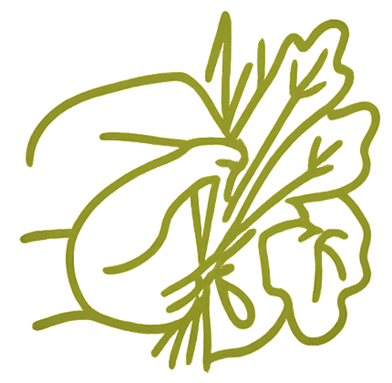
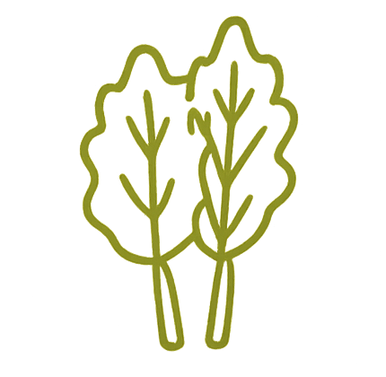
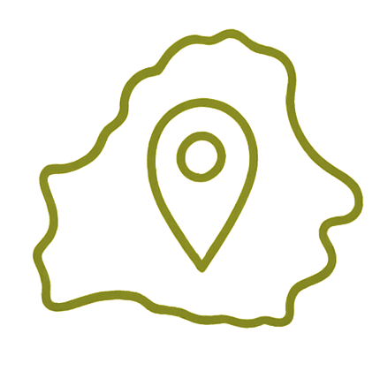
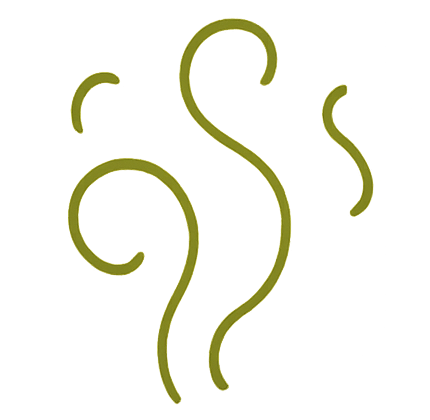
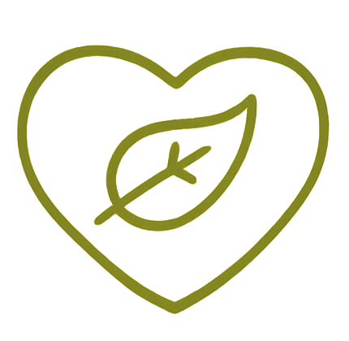

Добро пожаловать в мир настоящих банных веников!
Натуральные дубовые и берёзовые веники — для здоровья, силы и настоящего банного духа.
Мы производим и продаём веники ручной работы, собранные в экологически чистых районах Беларуси. Каждый веник — это забота о вашем теле и душе, аромат леса и тепло традиционной русской бани.
Оставить заявку
Почему стоит выбрать наши берёзовые и дубовые веники?

Собраны вручную в экологически чистых районах Беларуси
Мы не используем химикаты или обработку — только свежие листья и натуральные ветки, как делали наши предки

Идеальны для настоящей бани
Берёза — мягкая, ароматная, снимает усталость и очищает кожу. Дуб — плотный, мощный, укрепляет сосуды и делает кожу упругой
Свежесть и качество — гарантированы
Каждый веник проходит отбор: только плотные, ароматные, правильно высушенные. Вы получите веник, который не рассыпется и даст максимум пользы

Доставка по всей Беларуси
Отправим в любую точку страны — быстро, удобно, надёжно

Подходит для всех типов бань
Русская, финская, инфракрасная — наши веники раскрываются в любой температуре и дают тот самый банный эффект

Традиции и здоровье в одном венике
Это не просто аксессуар — это часть культуры, часть заботы о себе и своих близких
Почему стоит выбрать наши берёзовые и дубовые веники?
🌿 Сбор сырья
Ветки берёзы и дуба собираются вручную в экологически чистых лесах Беларуси. Сбор проводится в утренние часы, когда листья максимально насыщены эфирными маслами.
✂️ Отбор и подготовка
Отбираются только здоровые, гибкие ветки с плотной листвой. Листья очищаются от пыли и насекомых, ветки обрезаются по длине
🧺 Формирование веников
Ветки связываются в пучки, формируется плотная «голова» веника. Используется натуральный шпагат или льняная нить — без пластика и клея
🌬️ Сушка
Веники сушатся в тени, в хорошо проветриваемом помещении. Это сохраняет аромат, цвет и целебные свойства листьев. Сушка длится от 7 до 14 дней
🔍 Контроль качества
Каждый веник проверяется вручную: на прочность, плотность, аромат и внешний вид. Только лучшие экземпляры попадают в продажу
📦 Упаковка и доставка
Готовые веники упаковываются в бумагу или мешковину, чтобы сохранить свежесть. Затем отправляются покупателям по всей Беларуси